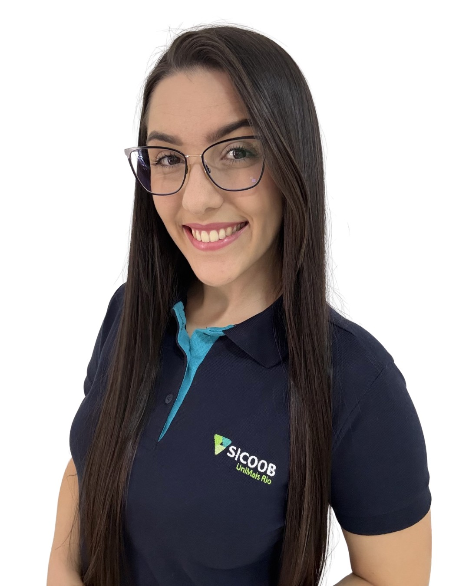

Eixos de Atuação
Suporte e Fomento ao Crédito
- Produtos de Crédito PF e PJ
- Fomento ao Crédito Comercial
- Fomento a Crédito Rural e Câmbio
Gestão do Crédito
- Gestão Preditiva e Automação
- Assessoria em Políticas e Processos
Nabia Jorge
Diretora Executiva
Responsável pela equipe de crédito da Central UniMais Rio.
Suporte e Fomento ao Crédito
Gisele Pavão
Especialista em crédito
Atuo como ponto focal do Eixo de Suporte e Fomento ao Crédito, realizando a interface entre a Central, as equipes de produtos, áreas de apoio e as cooperativas singulares, com foco no suporte às demandas comerciais, operacionais e de negócio. Na atuação junto à equipe de Pessoa Física e Pessoa Jurídica (PF e PJ), acompanho e apoio as demandas relacionadas ao portfólio de crédito, incluindo empréstimos, financiamentos, crédito imobiliário, crédito consignado, fundos garantidores, câmbio, campanhas nacionais e regionais, além dos serviços e processos relacionados à cobrança centralizada, em conjunto com o CSC, como cobrança extrajudicial e judicial, retomada, leilão e venda de bens, protesto centralizado e Negocia Sicoob, entre outros. Em conjunto com a equipe de Crédito Rural, atuo nas demandas comerciais, operacionais e de suporte relacionadas ao segmento, incluindo liberação e controle de recursos de repasse, Seguro Rural, operações BNDES Rural e BNDES Empresarial, FINEP, fiscalizações e demais assuntos relacionados às operações de crédito rural. A atuação busca facilitar a comunicação entre as áreas, apoiar as cooperativas na resolução de demandas, identificar oportunidades de negócio e contribuir para o fomento e o desenvolvimento do crédito nas cooperativas da Central.
Thamires Caldeira
Analista de Crédito
Atuo no fomento e suporte operacional de crédito comercial PF e PJ com foco nas linhas de empréstimos, financiamentos, crédito imobiliário, crédito consignado, fundos garantidores, garantias, antecipação de recebíveis e fornecedores, entre outros, com suporte às áreas comerciais e operacionais na aplicação das regras e operacionalização das linhas de crédito; Suporte às singulares na identificação, tratativa e correção de erros operacionais e sistêmicos, contribuindo para a regularização das propostas, continuidade das operações e melhoria dos processos de crédito; Acompanhamento, divulgação de rankings e resultados de campanhas, além do monitoramento das evoluções sistêmicas e dos produtos em geral. Atuação integrada com as singulares e CCS, contribuindo para a melhoria dos processos, eficiência operacional e correta execução das operações de crédito.

Roberta Pires
Assistente de crédito
Atuo no suporte operacional aos produtos de crédito PF e PJ, realizando atendimento, priorização, acompanhamento e direcionamento de chamados das cooperativas, além do apoio na disponibilização de material e orientações sobre os produtos e ferramentas de crédito Pessoa Física e Pessoa Jurídica. Realizo também o envio e acompanhamento de informações comerciais, como rankings de campanhas, informativos do CCS, comunicados e demais materiais de apoio, contribuindo para que as cooperativas tenham acesso às informações necessárias para a operação e comercialização dos produtos.
Rural e Câmbio
Dilermando Benevenuto
Analista de crédito
Atuo na área de Crédito Rural, prestando suporte técnico, comercial e estratégico às cooperativas singulares, com foco no desenvolvimento e fomento das linhas de Crédito Rural, CPR-F, BNDES Rural, BNDES Empresarial e Finep, além de Seguro Rural, Câmbio e Crédito de Câmbio. Acompanho a aplicação das exigibilidades do Crédito Rural e atuo na interface com o CCS na concessão de recursos de repasse, contribuindo para a adequada estruturação e operacionalização das operações. Também acompanho os processos de fiscalização de Crédito Rural e BNDES, apoiando as cooperativas na tratativa de pendências e na conformidade das operações.
Denise Lemes
Assistente de Crédito
Atuo na área de Crédito Rural, prestando suporte técnico e operacional às cooperativas do Sicoob em diferentes etapas do processo de crédito. No dia a dia, apoio o cadastramento e o acompanhamento de propostas de crédito rural, incluindo operações de Custeio, CPR-F, BNDES Rural, BNDES Comercial e outras modalidades, além de auxiliar na identificação e tratativa de pendências e inconsistências. Também acompanho operações no SICOR, as exigibilidades de LCA e os principais indicadores da área, bem como apoio as cooperativas na resolução de dúvidas e demandas operacionais. Atualmente, também estou ampliando minha atuação no acompanhamento das tratativas relacionadas ao monitoramento e à fiscalização das operações de Crédito Rural. Paralelamente, realizo o acompanhamento de normativos e regulamentações aplicáveis ao Crédito Rural, elaboração e atualização de planilhas e relatórios gerenciais, contribuindo para a organização dos processos, a conformidade regulatória e a eficiência operacional das cooperativas.
Gestão do Crédito

Thais de Paula
Especialista em crédito
Atuo de forma consultiva, apoiando o fortalecimento da gestão do crédito, a melhoria dos processos e a tomada de decisão, com foco em uma atuação preventiva e preditiva sobre a carteira. Minha atuação envolve análise técnica, processos de crédito, visão estratégica e relacionamento próximo com as cooperativas, abrangendo também modelagem de crédito e parametrização de regras, Fábrica de Limites, Especialização de CRL, além do desenvolvimento de soluções voltadas ao ganho de eficiência e à disseminação de boas práticas. Nesse contexto, apoio a elaboração e revisão de políticas, manuais e diretrizes internas, além de desenvolver ações de consultoria voltadas ao fortalecimento da governança e à evolução contínua dos processos de crédito.

Matheus Xavier
Analista de crédito
Facilitar a gestão de crédito por meio da análise de dados e automação de processos. Trabalho no desenvolvimento de dashboards e relatórios (Power BI e Sisbr Analítico) que apoiam na rotina operacional e preventiva de riscos. Além disso, atuo lado a lado com as cooperativas de forma consultiva, apoiando a construção de regras para a esteira de crédito no Sisbr, aprimoramento do crédito digital, fábrica de limites e precificação.

Priscila Bagatini
Analista de Crédito
Atuo no fortalecimento da gestão preventiva do risco de crédito, buscando desenvolver dashboards, indicadores e mecanismos de monitoramento que apoiarão a tomada de decisão das cooperativas. Também atuo de forma consultiva junto às singulares, apoiando a análise dos indicadores, a gestão do apetite a risco e a definição de ações preventivas e mitigadoras.

Camila Cazadei
Assistente de crédito
Atuo na gestão do crédito, prestando suporte às cooperativas em demandas relacionadas à gestão de grupo econômico, fábrica de limites e cadastro de pessoas no CAPES. No dia a dia, acompanho os processos de cadastro, atuo no tratamento de chamados do eixo de Gestão do Crédito, contribuindo para a organização e o direcionamento das demandas. Também apoio o levantamento, a organização e o acompanhamento de informações e processos, fortalecendo a rotina operacional e o atendimento às necessidades das cooperativas.